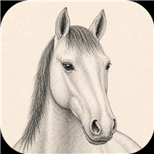

Jazdecký kalendár
Lokálny režim – údaje zostávajú iba v tomto zariadení.
Tréningové aktivity: 0
Pretekové dni: 0
Export koňa do PDF
1. Vyber koňa. 2. Klikni na Vytvoriť PDF.
Export obsahuje všetky udalosti vybraného koňa za zobrazený mesiac, bez mien klientov.
Súbor je pripravený
Po stiahnutí hľadaj súbor v priečinku Stiahnuté súbory alebo na mieste, ktoré si vyberieš v prehliadači.
Odkaz funguje iba v tomto zariadení, kým je stránka otvorená. Na odoslanie použi Zdieľať súbor alebo prilož stiahnutý súbor k správe.